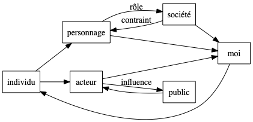

Sur "La mise en scène de la vie quotidienne"
La présentation de soi
La mise en scène de la vie quotidienne est un livre d’Erving Goffman, un des plus influents sociologues du XXème siècle. Cet article est une synthèse de mes notes de lecture sur le volume I, La présentation de soi, en attendant de lire le volume II, Les relations en public.
Le livre est une analyse des interactions sociales vues comme une pièce de théâtre, un jeu de rôles dans lequel les membres d’une équipe collaborent pour donner un spectacle à des spectateurs. Le type d’interactions analysé est volontairement limité aux situations quotidiennes : relations professionnelles, familiales, amicales. Au travers de nombreux exemples, E. Goffman démontre que dans ces situations, nous jouons tous un rôle dont le texte est largement improvisé mais dont le répertoire est limité par les attentes du public vis-à-vis de ce rôle. Un médecin, une équipe chirurgicale, une brigade de cuisine, un couple recevant des amis, un service dans une entreprise, tous ces groupes (parfois réduits à un seul individu) doivent autant se conformer aux attitudes, paroles, gestes, que l’on attend d’eux qu’ils doivent exercer un métier ou démontrer une expertise particulière.
Tout le vocabulaire du spectacle - mise en scène, scène, texte, coulisses, rôles titres et secondaires, critique, répertoire… - est mobilisé pour décrire ces situations que nous connaissons tous. Goffman n’utilise pas ce terme, mais il est clair que cette analyse fonde en partie le concept bourdieusien d’habitus, soit l’incorporation de normes et contraintes sociales par les individus et l’intériorisation de ces situations sociales transformées en règles de vie, habitudes, attentes. Mais Goffman souligne aussi à quel point il s’agit d’un jeu dont nous sommes parfois conscients, par exemple dans les situations où nous cherchons à exploiter une représentation que les autres ont de nous même - autorité, pouvoir, savoir…
Détail amusant, j’ai eu envie de lire ce livre après avoir vu un épisode de la série Mindhunter dans lequel la compagne du personnage principal, Hannah, étudie ce livre dans le cadre de son mastère en sociologie.
Miscellanées
Quelques notes prises au gré du livre…
Superficialité des interactions et situations
Dans les situations courantes, chacun se présente aux autres en fonction de ce qu’il perçoit de leurs positions et rôles respectifs dans l’espace social, de manière à ajuster les enjeux pour éviter de descendre trop profond dans les désirs de chacun et satisfaire aux exigences de son rôle. On cherche à éviter soigneusement tout ce qui pourrait être un sujet qui fâche tout en essayant de prendre en compte ce qui est le plus important pour soi.
De la tâche à la représentation de la tâche
L’ubiquité des rôles et représentations conduit les acteurs à investir plus de temps et d’énergie dans la représentation de l’action que dans l’action elle-même, et ce d’autant plus que l’action est socialisée, c’est-à-dire liée à des interactions sociales plutôt qu’à une tâche matérielle. La qualité de la communication prend le pas de la qualité du contenu de l’action communiquée, de même que la publicité et le marketing prennent le pas sur la réalité des produits et services proposés.
Hexis et représentation de soi
Ce que dit Goffman de la manière dont le rôle des acteurs est appris semble correspondre exactement à ce que Bourdieu appelle hexis, soit l’ensemble des activités corporelles qui sont le résultat de l’appartenance à un certain milieu et à un rôle attendu. Ils utilisent tous les deux la description faite par Sartre du comportement du garçon de café parisien comme un archétype de la manière dont chacun cherche, avec plus ou moins de réussite, à exister dans le monde social en se conformant à la place qu’il (semble ?) nous assigner.
L’équipe en contradiction avec l’organisation
Dans la mesure où tous les membres de l’équipe sont interdépendants pour jouer le rôle que l’on attend d’eux, et où ils partagent les “secrets” de leur rôle, l’existence concrète de l’équipe et sa structure interne va le plus souvent à ce que cherche à lui imposer l’organisation dont elle fait partie. Faire partie d’une équipe, c’est nécessairement développer une certaine familiarité au delà du masque social, de la même manière que des acteurs jouant une pièce doivent nécessairement laisser tomber le masque dans les coulisses.
Cette complicité qui peut aller jusqu’à une complète indépendance (l’équipe chirurgicale, le peloton en reconnaissance, le couple) est souvent vu comme une concurrence dangereuse pour les strates managériales supérieures qui ne sont pas dans l’équipe.
Peut-on échapper aux hiérarchies ?
On retrouve le schéma (la dramaturgie) de la cour dans de nombreuses circonstances : un individu ou un petit groupe est placé de sorte à être au centre de l’attention et à exercer le “rôle principal” dans la scène. Mais la hiérarchie dramaturgique n’est pas nécessairement identique à la hiérarchie directoriale : ce ne sont pas toujours les acteurs principaux qui dirigent et organisent la mise en scène. E.Goffman donne en exemple les cérémonies de deuils : la mise en scène est assurée par l’entrepreneur de pompes funèbres qui se fait discret, laissant le premier rôle au défunt et à sa famille.
Les positions de chacun dans l’équipe vont donc se distribuer sur 3 axes : le relief dramatique (la plus ou moins grande mise en valeur du rôle dans la pièce), l’autorité directoriale et le rôle cérémoniel ; et celui qui, pour le public, tient le rôle principal peut n’être qu’une “potiche” placée là pour “sauver les apparences”.
Tension entre régions postérieures et antérieures
Dans toute situation dramaturgique, E.Goffman distingue les régions antérieures, la scène, visibles du public et où se déroule la représentation, des régions postérieures, les coulisses, où se prépare la représentation et à laquelle seuls les acteurs ont accès. La distinction parfois abrupte entre le rôle que nous jouons pour le public sur la scène et le relâchement dont nous faisons preuve dans les coulisses sert une source de tension importante : il est essentiel pour la préservation de la qualité de la représdentation que ces deux régions soient maintenues séparées, que les “misérables petits tas de secrets” que nous partageons avec l’équipe ne soient pas divulgués au public. Que l’on songe au gouffre séparant le chaos des cuisines d’un grand restaurant du calme et de la sérénité qui doivent régner dans la salle !
Dans la mesure où chacun joue aussi un rôle au sein de l’équipe, pour ses collègues, une autre représentation peut avoir lieu dans les coulisses.
Dans certains cas limites de petits groupes fermés (aristocratie) ou de situations “uniques” (chefs d’état), l’absence apparente de région postérieure peut devenir intenable, car il devient impossible pour les individus jouant ces rôles d’en relâcher la tension, ce qui peut conduire à la création “artificielle” de situations de familiarité.
Rôles contradictoires
La distinction entre acteurs et publics est une simplification. Dans la plupart des situations réelles, d’autres personnes peuvent jouer des rôles dits contradictoires qui ne sont en relation ni avec la scène ni avec les coulisses, mais qui n’en pèsent pas moins sur la représentation:
- le délateur, celui qui a connaissance des coulisses et qui en divulgue les ressorts au public ;
- le comparse, situé en apparence dans le public et qui va chercher à modeler son comportement ;
- le contrôleur, investi d’une autorité sur la scène sans en faire partie, différent du censeur qui la critique de l’extérieur ;
- l’entremetteur ou intermédiaire qui va osciller, naviguer entre 2 équipes ;
- la non-personne (les domestiques) qui ne sont pas supposés avoir de rôle dans la scène ;
- le spécialiste, l’expert ou l’éducateur qui sont du côté des acteurs mais n’interviennent pas directement sur la scène ;
- le collègue, la personne qui joue un rôle similaire au nôtre mais pour un public différent ;
- …
Uniformité des mécanismes d’équipes
Les discours des comédiens et celui des savants sont tout à fait différents, mais leurs discours sur leurs discours sont tout à fait semblables.
Malgré la diversité des situations, les mécanismes d’interaction des équipes sont étonnament semblables quels que soient les domaines, ce qui légitime le travail sociologique et une approche structurale, ou “méta”, des comportements sociaux : en s’intéressant à la manière dont chacun joue un rôle et en parle, on découvre quelque chose d’un universel du comportement social.
Plus l’apprentissage et l’usage [d’indications scéniques sur la situation] sont inconscients , plus il est facile aux membres d’une équipe de cacher et de se cacher qu’ils fonctionnent bien comme une équipe. Une équipe peut très bien être une société secrète même pour ses membres.
Rupture du consensus
Un ou plusieurs acteurs engagés dans une représentation peuvent, involontairement ou volontairement, agir de manière à mettre en péril ou briser le consensus spectaculaire, de la même manière qu’un faux raccord ou un anachronisme peuvent induire chez un lecteur ou spectateur la disparition du consensus de suspension d’incrédulité nécessaire à toute fiction. Ces faux-pas ou cette “scène” (au sens de scène de ménage) peuvent être faits pour des raisons stratégiques personnelles ou collectives. Par exemple, une démission, une lettre ouverte, une déclaration fracassante peuvent permettre à une personne de “dire la vérité” sur ce qu’une équipe vit dans les coulisses, afin de faire bouger les lignes et provoquer un changement dans la représentation ou la mise en scène.
Qualité de la représentation
Les équipes doivent mettre en oeuvre plusieurs techniques pour assurer la qualité d’une représentation et maîtriser les impressions du public:
- la loyauté de chacun des équipiers envers le groupe ;
- la discipline qui permet d’anticiper les imprévus, de bien distinguer les régions postérieures et antérieures et de maîtriser au mieux les comportements attendus ;
- la circonspection dans la préparation de la représentation, en sélectionnant ou limitant la taille du public, en choisissant soigneusement les lieux.
Par exemple, si les patients sont endormis dans la plupart des interventions chirurgicales c’set aussi pour permettre à l’équipe médicale de se concentrer sur ses tâches en rlelâchant la pression du public.
De la même manière, l’expertise, le développement d’un langage et d’un appareillage théorique spécifique à un groupe donné, les procédures d’apprentissages sont des instruments de la consitution de groupes sociaux en champs autonomes permettant de mieux contrôler la qualité de la représentation en contrôlant les critères permettant d’en juger1.
Différents points de vue sur les organisations
Le sociologue et le scientifique peuvent adopter différents points de vues sur les organisations et groupes sociaux:
- technique en se concentrant sur les résultats, l’objectif “réel” du groupe, sa production ;
- politique en analysant les relations de dominations dans le groupe et avec d’autres groupes ;
- structurale en observant les différentes strates, les statuts des personnes et des groupes dans la société ;
- culturel en examinant les valeurs influencant les activités d’un groupe ;
- dramaturgique enfin, en démontant les mécanismes par lesquels un groupe cherche à représenter son activité et à maîtriser les impressions et sa relation au “public”.
Agir en information incomplète
Les acteurs sociaux doivent agir, décider, prévoir en fonctions des actions, décisions et anticipations d’autres acteurs avec lesquels ils interagissent, mais cette information est toujours incomplète. Ils et elles doivent donc s’en remettre aux apparences, aux rôles, à la représentation que les autres donnent d’eux mêmes, aux rôles qu’ils jouent à notre intention avec comme hypothèse fondamentale que “l’habit fait le moine”, où les acteurs traduisent en impressions leurs intentions et où l’on s’attend à ce qu’il y ait congruence entre les “apparences” et la “réalité”. Mais inévitablement, l’habit se substitue au moine et les acteurs finissent par se concentrer sur les impressions qu’ils donnent plutôt que sur la réalité de leurs actions.
Synthèse
J’ai été particulièrement intéressé par l’importance que Goffman octroie à l’équipe. C’est l’unité d’analyse à laquelle il octroie du sens, le jeu d’une seule personne étant considéré comme un cas particulier, c’est au sein d’équipes diverses, au gré des situations et des circonstances (couple, famille, travail, politique), que nous jouons des rôles : le mari et la femme (ou toute autre combinaison) forment une équipe face aux enfants du couple, la famille joue quand elle reçoit ou est reçue chez d’autres, le professionnel est très rarement seul et joue une partition au sein d’une équipe plus ou moins large d’autres professionnels pour accomplir un travail mais aussi jouer un rôle social ; au fil des âges de la vie, notre rôle évolue.
Le “moi” est le produit d’un rôle, pas sa cause, il est une construction essentiellement sociale.

Ce que nous permettent Goffman, la sociologie, les sciences sociales en général, c’est utiliser ce cadre d’analyse pour prendre conscience des rôles que nous jouons, de chausser des lunettes déformantes pour mieux nous voir et voir les autres dans toutes ces situations d’interactions et démonter les mécanismes qui sont de l’ordre de la dramaturgie d’une situation. Dans le cadre d’une équipe de développement par exemple, sujet qui me touche de près, il devrait être possible de rendre explicite ces mécanismes implicites, par exemple au travers de rétrospectives ou de techniques de demande de feedback, afin de libérer les interactions au sein de l’équipe du poids des rôles attendus de chacune. Une telle équipe, consciente d’elle même, serait mieux à même de collaborer avec d’autres équipes sur un pied d’égalité, serait en quelque sorte une matrice à partir de laquelle des hiérarchies et des structures de domination insconscientes ou refoulées seraient déconstruites. On peut rêver…
Dans, entre autres, Les règles de l’art et Sur l’état, P.Bourdieu montre comment des champs s’autonomisent afin de permettre à leurs membres d’acquérir un statut social plus élevé en surmontant la domination par d’autres groupes sociaux. Dans un cas, le champ artistique s’émancipe de la société en développant le concept de l’art pour l’art ; dans l’autre les lettrés laïcs s’émancipent de la tutelle de l’Église et de l’aristocratie en développant le concept de d’état comme une organisation autonome par rapport au souverain.↩︎